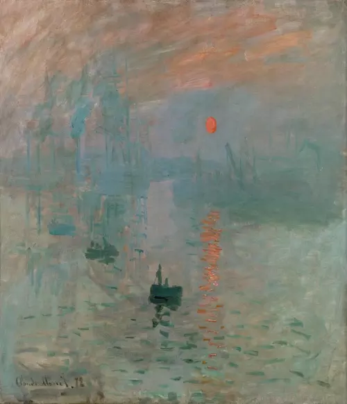
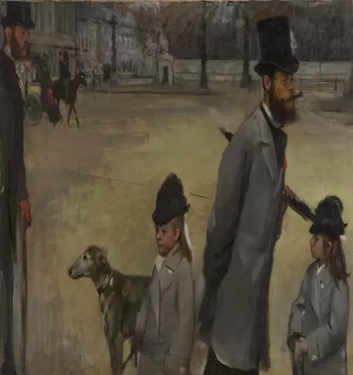
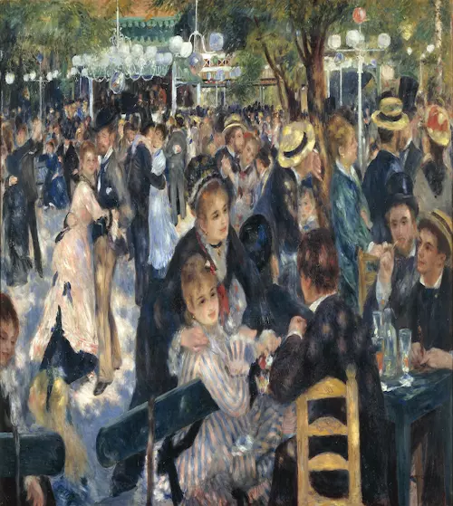
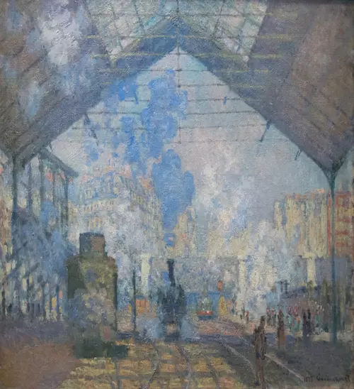

印象主义
印象主义是19世纪末在法国兴起的艺术运动。印象派艺术家注重光线和色彩的即时效果，强调在特定时刻捕捉自然景象的视觉印象。他们常在户外作画，追求变化中的光影和色彩。
艺术家介绍
莫内
印象派的宗师：莫内 Claude Monet 1840 ~ 1926 French
莫奈是印象派最具代表性的大画家，而印象派 （ Impressionnisme ） 名称的由来，就是从莫内的这幅油画标题「印象. 日出中的「印象」 一词而来。
印象主义可说是欧洲绘画史的一次大革命，对近代绘画的发展有相当深远的影响。 印象主义画家吸取当时科学上的光学理论，认为色是在光的照射下而产生的，在不同时间、环境、气候等客观条件下，受不同光的变化而有各种不同色彩。 透过写生，发现过去一般不被注意的色彩现象，从而在绘画色彩上引起了重大的革新。
摩里逤特
自觉的女性：摩里逤特 Berthe Morisot 1841 ~ 1895 French
摩里逤特是法国印象派团体中不可或缺的人物，和最出色的女画家。 1841 年生于法国布兰热一个颇有声望的官吏家庭，1895 年卒于法国巴黎。
而摩里逤特也深受马奈艺术观的影响，成为一位印象派画家。 她的作品大多以家庭生活为题材，笔触流畅，情感细腻。 在法国成名的美籍女画家卡莎特，其创作题材与摩里逤特相近。
作品赏析
克劳德·莫奈，《印象，日出》，1872年
克劳德·莫奈（Claude Monet）在印象派画家的首次展览中展出了《印象，日出》，这是由巴黎前卫艺术家主办的独立展览。其激进的风格和贴切的标题导致了当地艺术评论家的一连串负面评论。 “他们是印象派画家，因为他们不是渲染风景，而是渲染风景产生的感觉，”Le Siècle的朱尔斯·卡斯塔尼亚里（Jules Castagnary）写道。“这个词本身已经进入了他们的语言：在目录中，莫奈的《日出》不被称为风景，而是印象。因此，他们离开了现实，进入了理想主义的领域。 然而，最终，正是这幅画及其评论为印象派画家赢得了他们的名字。
埃德加·德加，协和广场，1875 年
协和广场描绘了艺术家兼赞助人卢多维克-拿破仑·莱皮克和他的女儿和狗在巴黎的一个公共广场上。大量的负空间、裁剪的人物和不寻常的构图表明德加受到了摄影的影响。
皮埃尔·奥古斯特·雷诺阿，《BAL DU MOULIN DE LA GALETTE》，1876年（1910）
皮埃尔·奥古斯特·雷诺阿（Pierre-Auguste Renoir）于1876年创作了Bal du moulin de la Galette，当时印象派仍处于早期阶段。它描绘了一群欢腾的人们，包括演员、艺术家、评论家和雷诺阿的家人，在蒙马特的户外舞厅 Moulin de la Galette。阳光斑驳的灯光、细腻的笔触和性感的女性形象都是雷诺阿风格的象征。
克劳德·莫奈，《圣拉扎尔火车站》，1877年
《圣拉扎尔火车站》是莫奈在巴黎圣拉扎尔火车站创作的12幅画作系列中的第一幅。它捕捉到了一列行驶中的火车，蒸汽和烟雾弥漫在建筑物中，天空乌云密布，行人点缀在下面的火车轨道上。这个系列在莫奈的作品中因其更都市的主题而脱颖而出——因为这位艺术家以其以自然为灵感的作品而闻名。